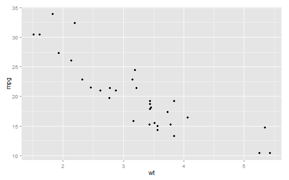

My First Slides
Examples
JDP
QA
Welcome
Hello
I am JDP.
My Details
I am a NZ citizen.
Question 1
What is 1 + 1?
- 1
- 2
- 3
- 4
This is a hint
This is an explanation
Question 2
What are values that x can take to satisfy the following quadratic equation?
$x^2$ - x - 6 = 0
- 2, 3
- 2, -3
- -2, 3
- -2, -3
- None of the above
Factorise or use formula \[\frac{-b \pm \sqrt{b^2 - 4ac}}{2a}\] to find OR substitute and check
Sum of roots = -1
Product of roots = -6
Hence factors are (x + 2) and (x - 3)
Check Chunk Execution
library(ggplot2);
qplot(wt, mpg, data = mtcars)
